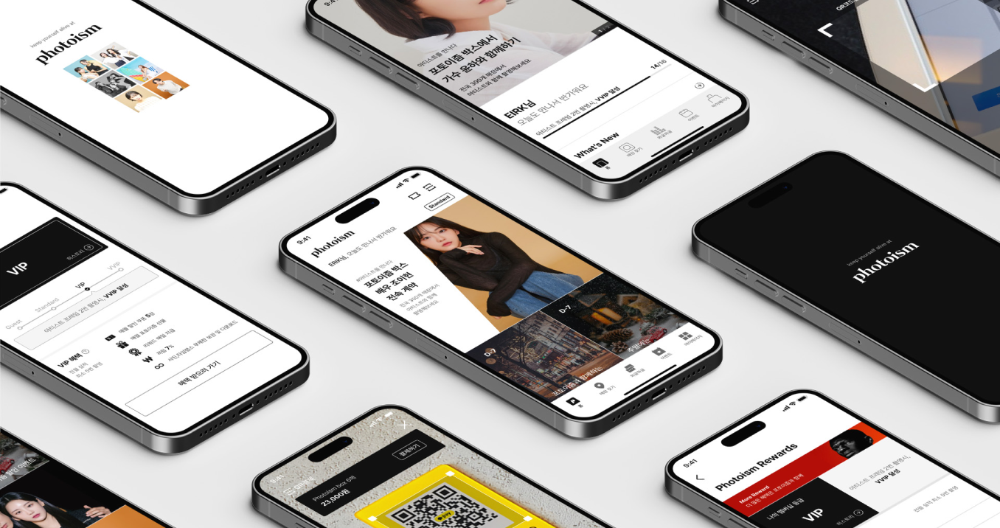

SSeobuk · Photoism · Photo Platform
Extending photo-booth memories beyond the kiosk.
Photoism helps users manage special memories, discover frames, prepare kiosk shoots, and automatically keep photos and videos in My Album.

Overview
Photoism is an app for managing and enjoying the special memories users create at Photoism. It connects moment registration, frame recommendations, shooting reviews, cart-to-kiosk preparation, My Album storage, frame requests, and frame news into one mobile experience.
My responsibility was design management. The case study will focus on how the app supports the full photo-booth journey, from discovering a frame before shooting to automatically saving photos and videos after kiosk use.
| Area | Scope |
|---|---|
| Client | Seobuk |
| Product | Photoism mobile app |
| Role | Design Manager, Mobile UX, Service Design |
| Service focus | Moment and frame recommendations, shooting reviews, cart-to-kiosk flow, My Album, frame requests, and frame news |